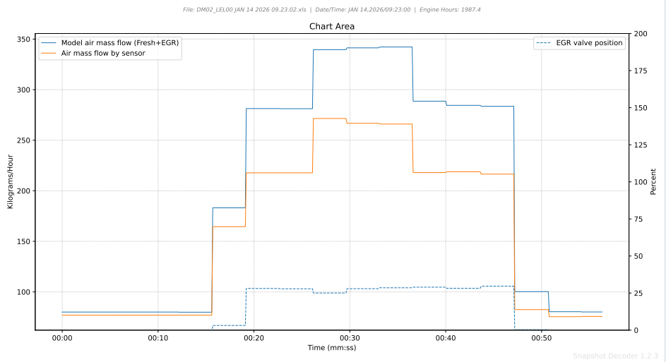
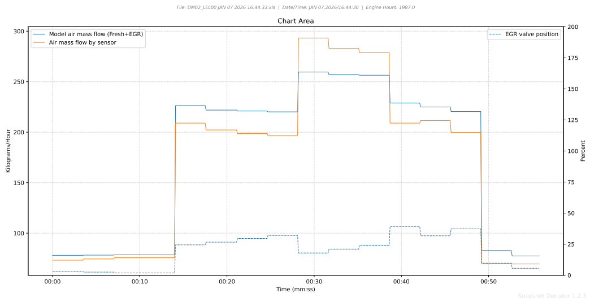

Boost Leak Chart
The Boost Leak Quick Chart compares modeled air flow against measured Mass Air Flow (MAF)
to detect intake system leaks between the MAF sensor and the intake manifold.
This chart also displays EGR valve position to help distinguish between normal air flow
differences resulting from the displacement of fresh air in the cylinder by exhaust gas.
Understanding the PIDs
AirMod_mfGasIntkVlv_f (Modeled Air Flow - Fresh + EGR)
This is the ECU's calculated estimate of how much air should be entering the engine
based on engine speed, throttle position, manifold pressure, and other operating conditions.
The ECU uses this value for fuel injection calculations.
AFS_dm (Mass Air Flow Sensor)
This is the actual measured air flow from the Mass Air Flow sensor,
located between the air filter and the turbocharger inlet.
The MAF sensor directly measures air entering the intake system.
EGRVlv_rAct (EGR Valve Position)
The Exhaust Gas Recirculation valve position, shown as a percentage.
When open, the EGR valve allows exhaust gas to flow into the intake manifold,
which affects the relationship between MAF and modeled air flow.

Why MAF and Modeled Air Flow Differ
Under normal operation, MAF and modeled air flow should track closely together.
However, when the EGR valve opens, a predictable difference appears:
Normal EGR Operation
When the EGR valve opens, exhaust gas flows into the intake manifold. This gas:
- Enters the intake manifold downstream of the MAF sensor
- Takes up space in the cylinder that would otherwise be filled with fresh air
- Causes the MAF air flow to drop below Modeled Air Flow
Key Point: During normal EGR operation,
MAF Air Flow < Modeled Air Flow because the EGR gas displaces fresh air in the cylinder.
Detecting Boost Leaks
A boost leak occurs when pressurized air escapes the intake system between the
turbocharger compressor outlet and the intake manifold. Common leak points include:
- Charge air cooler (CAC) hose connections
- Charge air cooler core damage
- Intake manifold gaskets
- Intake pipes, hoses, and fittings
How a Boost Leak Appears on the Chart
When a boost leak is present:
- The MAF sensor measures all the air entering the system at the turbo inlet
- Some of that air leaks out before reaching the intake manifold
- Less air actually enters the engine than the MAF measured
- The ECU's modeled air flow reflects what's actually in the cylinder
- Result: MAF reads higher than modeled air flow

What's Normal: When the EGR valve is closed, I have noticed many machines
where MAF flow is slightly greater than modeled air flow.
This is normal and expected.
Reading the Chart
Normal Conditions (No Leak)
- With EGR closed: MAF ≈ Modeled Air Flow
- With EGR open: Modeled Air Flow > MAF (normal, expected)
Boost Leak Conditions
- Engine under load: Modeled Air Flow < MAF (abnormal - indicates leak)
- The gap increases with higher boost pressure
- Leak is most visible under load when boost pressure is highest
Diagnostic Procedure
- Capture a snapshot during loaded operation (higher boost = more obvious leak)
- Open the Boost Leak quick chart
- Compare MAF to modeled air flow when engine boost should be high
- If MAF is consistently higher than modeled, investigate for boost leaks
Tips
- Focus on high-load conditions where boost pressure amplifies any leaks
- Small differences may be within normal sensor tolerance
- Check charge air cooler hoses and connections first - most common leak points